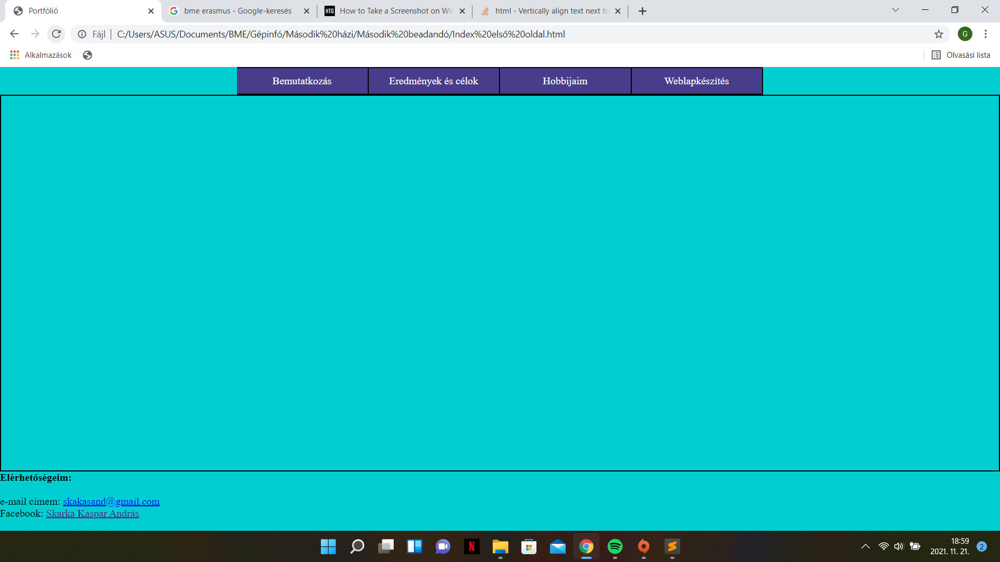

A Weblapkészítés nehézségei:
Az első lépés számomra a feladat elkészítése során a leírásban mellékletként szereplő segédanyagok alapos áttanulmányozása volt, mivel ezelőtt soha sem foglalkoztam html-el, ezért gyakorlatilag nulla előismerettel rendelkeztem. Ezt követően elhatároztam, hogy először az oldalak közti navigáláshoz szükséges menüsort készítem el, mivel a feladat ezen részétől tartottam a leginkább. Illusztrációul itt egy kép a kész menüsorról:

Az ezt követő lépés az egységes lábléc kialakítása volt, benne az elérhetőségeimme. Ezután a fő szövegrész valamint a képek megformázását tűztem ki magam elé célul, amely feladat elvégzéséhez a W3 Schools "Learn html" című segédletét, valamint a terméktervezők tavalyi online-óráinak videóanyagát használtam. Ezek után már nem ütköztem jelentős akadályokba, így mindössze csak annyi teendőm volt, hogy feltöltöttem szöveggel a kész vázat.
Összegezve azt gondolom, hogy a feladat végére megtanultam a html alapjait, ami bármikor jól jöhet még a jövőben, valamint az elkészült portfólió remek alapja lehet egy, a későbbiekben is felhasználható bemutatkozó anyagnak, amelyben már szakmai eredményiemet is meg tudom jeleníteni.